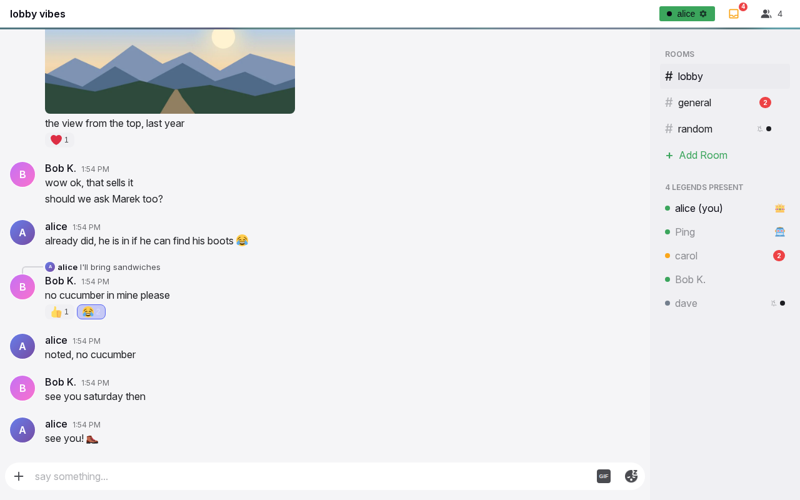
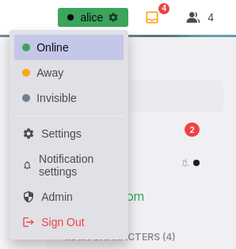
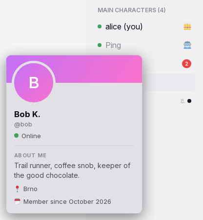
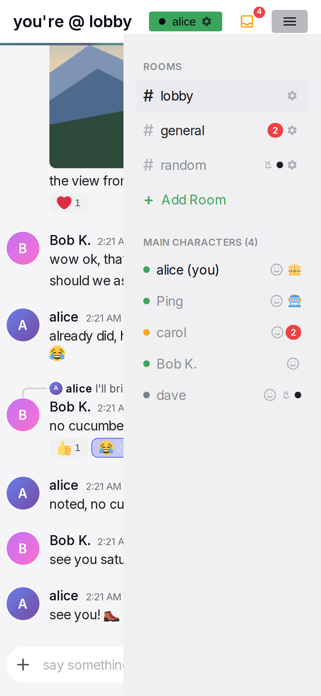

Header, sidebar and overlays
The frame is everything around a conversation: the header with the title, the user's status chip and the people control; the sidebar with the rooms and the people; and the layers that appear over the page, the status menu, the profile card, the connection state, the notice strip, the install and notification prompts and the error screen. The frame is the same on every conversation page and on Settings.
Anatomy




- Header. One row: the title area on the left; on the right the status chip, the mailbox when there are unread messages, and the people button with the online count. Under it a 3 px line, turquoise in rooms and purple in direct messages.
- Title area. In a room: a playful title built from the room name. In a direct message: a back arrow, the partner's small avatar and name. On Settings: a back arrow and "Settings".
- Status chip. A small coloured chip with a dot, the user's display name and a gear. Its colour is the user's current status. It opens the status menu.
- Mailbox. A tray icon with a red count of unread messages, shown only when the count is above zero.
- People button. A people icon with the online count on desktop. On narrow screens a hamburger that opens the sidebar.
- Connection dot. A small dot next to the title area, shown only while the connection is not normal.
- Sidebar. On the right, 240 px wide on desktop. The section "ROOMS" with every room, then the people section with a playful title and the online count.
- Notice strip. A one-line strip between the header line and the conversation, shown only for a lasting state that needs the user: a new version, or a sign-in.
- Overlays. The status menu, the profile card, the notification prompt, the install dialog and the error screen.
Rules
Layout
SH-01The chat screen fills the window and never scrolls as a whole. The header is on top, the header line under it, then the conversation on the left and the sidebar on the right.
SH-02Above 768 px the sidebar is always visible, 240 px wide. At 768 px or less it slides in from the right over the conversation, and the header shows a hamburger instead of the people count.
SH-03The two width tiers are separate on purpose: 768 px for the frame, 600 px for the compact components. A window between 601 and 768 px has the slide-in sidebar with desktop components.
SH-04The theme's background pattern shows only behind the messages, never behind the header or the sidebar. A room and a direct message may have a different pattern and tint; status colours never change with the theme context.
Header
SH-05In a room the title is one text from the configured room header list with the room name filled in, picked when the conversation opens and kept until the user leaves it. The fallback is "# {room}".
SH-06In a direct message the title area shows a back arrow, the partner's 24 px avatar and the partner's display name, or username when there is none. The back arrow goes to the lobby, at every width.
SH-07On Settings the title area shows a back arrow and "Settings". Channel settings show "#{room} Settings"; a new channel shows "New Channel".
SH-08The people button shows the number of people online. Invisible people are not counted. At 768 px or less the count is hidden and the button is a hamburger that opens the sidebar.
SH-09The mailbox shows only while the total unread count is above zero: a tray icon with a red count. Its tooltip is "{n} unread messages". The total is the sum of the counts in the sidebar, and excludes the open conversation. A tap opens the sidebar on narrow screens. See Notifications and unread.
SH-10At 600 px or less the header has more padding, a larger title and a shorter chip name.
Status chip and menu
SH-11The chip shows a dot, the user's display name and a gear. Its colour is the user's current status: green for online, orange for away, grey for invisible. An automatic away changes the colour, not the chosen status.
SH-12A tap on the chip opens the menu under it: "Online", "Away", "Invisible", a divider, "Settings", "Notification settings", "Admin" for admins, and "Sign Out" in red. The chosen status is highlighted. A tap outside the menu, or Escape, closes it.
SH-13A status pick applies at once and closes the menu. Without a connection the three status items are dimmed and do nothing. See Presence.
SH-14"Notification settings" shows a crossed bell while the user's account-wide mute is on, so the mute is visible from every page.
SH-15Sign Out ends this device's session only. Other devices stay signed in. When the user has no login link and no secret code, a confirmation warns that the account cannot be reached again. When unsent messages exist on this device, a confirmation warns that they are lost. Signing out removes the device's notification subscription and local data. See Sign-in and sessions.
Connection state
SH-16While the connection is normal the header shows no connection indicator.
SH-17While Yap connects or reconnects, a pulsing orange dot shows next to the title area and the header line pulses orange. Without a connection the dot is a grey ring and the header line is dimmed. When the user must act, the dot is red and the notice strip says what to do.
SH-18The dot's meaning shows as a short text bubble on hover or after a tap: "Connecting…", "Reconnecting…", "Offline. Messages are sent when the connection returns.", "Signed out", "Update available". The next tap elsewhere closes the bubble.
SH-19The conversation stays readable and usable during an outage. There is no banner over the page and no modal.
SH-20The notice strip shows only for two lasting states. A new version: "You are awesome and so is the new version of this app. Please refresh." with a "Reload" button; Yap never reloads by itself. Signed out: "Sign in to continue." with a "Sign in" link. The strip has one line and at most one control, and shortens the conversation while it shows.
Sidebar: rooms
SH-21The sidebar has two sections in this order: "ROOMS", then the people section. Section titles are small capitals.
SH-22Every user sees every room, in the admin's order; new rooms go to the bottom. A room row shows "#", the name, then a crossed bell when the user muted that room, an unread mark, and for admins a gear. The open room is highlighted and shows no unread mark.
SH-23The unread mark is a red count for an unmuted room and a small dot without a number for a muted one. Muting hides the number, never the fact that something arrived. A room with unread has brighter text.
SH-24The gear opens the room's settings. On desktop it appears on hover; on touch it is always visible. Admins also see "Add Room" as the last row.
SH-25An admin-only room is visible to everyone and read-only for non-admins. The lobby cannot be deleted. Rooms created, renamed or deleted elsewhere update the list at once; a deleted open room sends the user to the lobby.
SH-26A tap on a room opens it and closes the sidebar on narrow screens.
SH-27The sidebar scrolls when its content is taller than the screen.
Sidebar: people
SH-28The people section title is one text from the configured list with the online count filled in; the fallback is "Online Users ({n})". A new text is picked when the count changes.
SH-29The list holds every person online, whatever their status, and every person the user has a direct message with. Invisible people are shown grey, like offline ones, and are not counted.
SH-30Order: admins, then the bot, then the user, then everyone else. Everyone else: unmuted direct messages with unread first; then people online; then offline people, the most recent direct message first; within a tier by name.
SH-31A row shows a status dot (green online, orange away, grey otherwise), the display name, " (you)" on the user's own row, the info button on touch screens, a crown for admins, a robot for the bot, a crossed bell for a muted direct message, and the unread mark with the room rules. Rows show no avatar and no message preview.
SH-32A tap on another person opens the direct message with them and closes the sidebar on narrow screens. A tap on the user's own row does nothing. The open direct message's row is highlighted.
SH-33The list, its dots, its title and its counts update at once when someone joins, leaves, changes status, or when an unread count changes.
Profile card
SH-34On a device with a fine pointer above 768 px, hovering a person's name shows their profile card next to the pointer; it closes when the pointer leaves the name. On touch screens and at 768 px or less, an info button after the name opens the card centred over a dimmed page; a tap outside, or Escape, closes it.
SH-35The card shows: a banner in the person's avatar colours, the 80 px avatar, the display name with the admin crown or the bot badge, "@username", a status line "Online", "Away" or "Offline" (invisible shows as offline), "About me" with the bio or "No bio yet — a person of mystery 🕵️", "📍 {location}" when set, and "🗓️ Member since {Month yyyy}". It has no buttons.
Sidebar on phones
SH-36The sidebar opens from the hamburger or the mailbox and slides in from the right, its top edge under the header. The conversation stays visible behind a transparent layer; the header stays usable.
SH-37It closes on a tap outside it, on a room or person pick, on the hamburger, and on any menu item that leaves the page.
Prompts and dialogs
SH-38The notification prompt appears on a chat page when Yap runs as an installed app, the browser has not been asked yet, the user has dismissed it fewer than three times on this device, and the server can send notifications. It is a centred card over a dark layer: a bell, "One more step", the explanation, "Enable Notifications" and "Maybe Later". See Notifications and unread.
SH-39"Enable Notifications" asks the browser and then closes the prompt whatever the answer. "Maybe Later" counts one dismissal. After three dismissals the prompt never shows again on this device.
SH-40The "install it" link in the bot's welcome message, and "Install Yap" in Settings, open the install dialog: "Add Yap to your home screen" with the buttons "Use existing app" and "Install app", or "Yap is already installed" with "Close" when it is installed. "Install app" starts the browser's install or shows the add-to-home-screen guide. See Offline and installation.
SH-41When a page fails, the conversation area shows "Something went wrong" with "Try Again" and "Reload Page", and the header and sidebar stay. Drafts and unsent messages survive both buttons. When Yap cannot start at all, the gremlin screen shows: "Oops! The gremlins got us" with "Reload & Try Again".
Routes and the tab
SH-42Routes: /lobby for the default room, /room/{id}, /dm/{username}, /settings, /admin, /channel/new, /channel/{id}/settings, /login, /invite/{code}, and / for the start. A room or direct message link opens directly when signed in; signed out, the user goes to the login page and lands on the link after signing in.
SH-43/ opens the user's last conversation on this device, else the lobby. /dm/{unknown user}, /dm/{the user themself} and /room/{unknown id} go to the lobby.
SH-44Browser back goes to the previous conversation or page. The header back arrow always goes to the lobby.
SH-45The tab title is "{Project} | #{room}" in a room and "{Project} | @{username}" in a direct message; "Settings" and "Admin" on those pages. While the tab is hidden, a "({n}) " prefix counts the arrivals by the rules on the notifications page, and resets on return.
SH-46The installed app's icon shows the mailbox count as a badge where the system supports it, without asking for permission. The badge clears when the count is zero.
States
| State or trigger | Input | What the user sees |
|---|---|---|
| Room opened | all | Playful room title, turquoise line, room row highlighted. |
| Direct message opened | all | Back arrow, avatar and name, purple line, person's row highlighted. |
| Unread arrives elsewhere | all | Red count or dot on its row; mailbox with the total. |
| Open conversation | all | Its row shows no count; the total excludes it. |
| Chip tap | mouse, touch | Status menu under the chip. |
| Status pick | mouse, touch | Chip colour changes at once; menu closes. |
| Automatic away | all | Chip turns orange; the menu still marks Online. |
| Tap outside the menu, Escape | mouse, touch, keyboard | Menu closes. |
| Connection lost | all | Grey ring, dimmed header line; page stays usable. |
| Reconnecting | all | Pulsing orange dot and line. |
| Connected | all | No indicator. |
| Dot hover or tap | mouse, touch | Text bubble with the state. |
| New version | all | Orange notice strip with "Reload". |
| Signed out elsewhere | all | Red dot; strip "Sign in to continue." |
| Hover a name, desktop | mouse | Profile card next to the pointer. |
| Info button, touch or narrow | touch, mouse | Centred card over a dim layer. |
| Hamburger or mailbox, narrow | touch, mouse | Sidebar slides in; header still usable. |
| Tap outside the sidebar | touch, mouse | Sidebar closes. |
| Room or person pick, narrow | touch, mouse | Conversation opens; sidebar closes. |
| Gear on a room | mouse, touch | Room settings. Always visible on touch. |
| Sign Out without a way back | mouse, touch | Confirmation about losing the account. |
| Sign Out with unsent messages | mouse, touch | Confirmation about losing them. |
| Installed app, permission not asked | all | "One more step" prompt, up to three times. |
| Page error | all | "Something went wrong", "Try Again", "Reload Page". |
| Tab hidden, arrivals | all | "({n}) " before the title. |
Wording
| Where | Text | ||
|---|---|---|---|
| Room header list (configured; defaults) | "# {0}", "you're @ {0}", "{0} chat", "welcome to {0}", "{0} vibes" | ||
| Room header fallback | "# {0}" | ||
| People section titles (configured; defaults) | "the gang ({0})", "squad check ({0})", "main characters ({0})", "{0} legends present", "chat fam ({0})" | ||
| People section fallback | "Online Users ({0})" | ||
| Header tooltips | "Back to lobby"; "Toggle sidebar"; "{n} unread messages" | ||
| Status menu | "Online"; "Away"; "Invisible"; "Settings"; "Notification settings"; "Admin"; "Sign Out" | ||
| Sign-out confirmations | "You have no login link and no secret code. Without one, you won't be able to get back into this account. Continue signing out?"; "Unsent messages on this device will be lost. Continue signing out?" | ||
| Connection bubble | "Connecting…"; "Reconnecting…"; "Offline. Messages are sent when the connection returns."; "Signed out"; "Update available" | ||
| Notice strip | "You are awesome and so is the new version of this app. Please refresh." with "Reload"; "Sign in to continue." with "Sign in" | ||
| Sidebar | "ROOMS"; "Add Room"; " (you)"; tooltips "Channel settings", "Notifications muted", "Admin", "Bot", "View profile" | ||
| Profile card | "@{username}"; "Online"; "Away"; "Offline"; "About me"; "No bio yet — a person of mystery 🕵️"; "📍 {location}"; "🗓️ Member since {Month yyyy}" | ||
| Notification prompt | "One more step"; "Please enable notifications so Yap can send you notifs about new DM messages / mentions when the app is not open. You can always change this later in Settings, and you can also disable notifications temporarily."; "Enable Notifications"; "Enabling..."; "Maybe Later" | ||
| Install dialog | "Add Yap to your home screen"; "Already have a Yap icon? Open it to keep using your app. To replace an older install, save your login link in Settings, remove the old icon, then install here."; "Use existing app"; "Install app"; "Yap is already installed"; "Keep using this app. You do not need to install it again."; "Close" | ||
| Error screen | "Something went wrong"; "Try Again"; "Reload Page" | ||
| Start failure | "Oops! The gremlins got us"; "Something went terribly wrong. Our best engineers (who are also gremlins) are looking into it."; "Reload & Try Again"; "If this keeps happening, try clearing your browser cache or yelling at your computer." | ||
| Not found | "Not Found"; "Sorry, the content you are looking for does not exist." | ||
| Tab titles | "{Project} \ | #{room}"; "{Project} \ | @{username}"; "({n}) " prefix; "Settings"; "Admin" |
Related
- Presence for who counts as online and the status rules.
- Notifications and unread for the counts, the mutes, the title prefix and the notification prompt's effect.
- Sign-in and sessions for sign-out, login links and sessions on other devices.
- Offline and installation for the install flow and what works without a connection.
- Settings and Administration for the pages the menu opens.
- Timeline and media for the conversation under the frame.